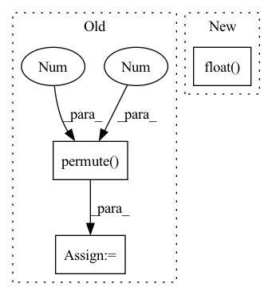

Pattern ID :1193
Before Change
//with torch.no_grad():
batch_features = self.__cnn__(images) // (N, features_dim, block_num, block_num)
conv_features = self.__img2embed_conv__(batch_features).permute(0 , 2, 3 , 1) // (N, block_num, block_num, embed_dim * 0.5)
apool = torch.mean(conv_features, dim = 1) // (N, block_num, embed_dim * 0.5)
mpool, _ = torch.max(conv_features, dim = 1) // (N, block_num, embed_dim * 0.5)
imgs_embed = torch.cat([apool, mpool], dim = 2) // (N, block_num, embed_dim)After Change
//batch_texts = self.__clip__.encode_text(text_input)
//tags_embed = self.__text2embed__(self.__clip_drop__(batch_texts.float())).unsqueeze(1)
imgs_embed = self.__img2embed__(self.__clip_drop__(batch_features.float() )).unsqueeze(1)
words_embed = self.__content_embed__(input_ids)
indices = torch.arange(self.seq_len + self.tags_num + self.block_num).expand(batch, -1).to(device)In pattern: SUPERPATTERN
Frequency: 3
Non-data size: 3
Instances Fragment ID: 3653175
Project Name: siwooyong/codalab-microsoft-coco-image-captioning-challenge
Commit Name: d24b22ec9f0be1acd2f307be20ec85f84f8d8795
Time: 2021-07-08
Author: 68500343+yongsiwoo@users.noreply.github.com
File Name: models/base_model.py
M Class Name: decoder
N Class Name: decoder
M Method Name: forward(4)
N Method Name: forward(3)
M Parent Class: nn.Module
N Parent Class: nn.Module
M File Name: models/base_model.py
N File Name: models/base_model.py
M Start Line: 57
M End Line: 74
N Start Line: 75
N End Line: 97
Before Change
N, M, D = self.embedding.size()
assert C == N * D
x = x.view(B, N, D, L).permute( 1, 0 , 3, 2 ) // N, B, L, D
x_flat = x.detach().reshape(N, -1, D)
distances = torch.cdist(x_flat, self.embedding)After Change
x_flat, self.embedding.t(),
alpha=-2.0, beta=1.0)
indices = torch.argmin(distances.float() , dim=-1)
encodings = F.one_hot(indices, M).float()
quantized = F.embedding(indices, self.embedding)
quantized = quantized.view_as(x) Fragment ID: 3653171
Project Name: bshall/vectorquantizedcpc
Commit Name: 535c95415d62ececde085e376f451b3b76e1b624
Time: 2020-05-01
Author: benji.l.shall@gmail.com
File Name: model.py
M Class Name: VQEmbeddingEMA
N Class Name: VQEmbeddingEMA
M Method Name: forward(2)
N Method Name: forward(2)
M Parent Class: nn.Module
N Parent Class: nn.Module
M File Name: model.py
N File Name: model.py
M Start Line: 21
M End Line: 54
N Start Line: 81
N End Line: 112
Before Change
def forward(self, anchor, positive, dist_keypts):
pids = torch.FloatTensor(np.arange(len(anchor))).to(anchor.device)
// dists = cdist(anchor, positive, metric=self.metric)
dists = torch.matmul(anchor, positive.permute(1 ,0 ) )
// add 10 to false negative
// dist_keypts = np.eye(dist_keypts.shape[0]) * 10 + dist_keypts.detach().cpu().numpy()
// add_matrix = torch.zeros_like(dists)
// add_matrix[np.where(dist_keypts < self.safe_radius)] += 10
// dists = dists + add_matrix
false_negative = dist_keypts < self.safe_radius
pos_mask = torch.eq(torch.unsqueeze(pids, dim=1), torch.unsqueeze(pids, dim=0))
// pos_mask = pos_mask | false_negative
neg_mask = torch.logical_not(pos_mask | false_negative)
// dists * pos_mask get the distance of each valid anchor-positive pair.
furthest_positive, _ = torch.min(dists + 1e5 * (~pos_mask).float(), dim=1)
// here we use "dists + 10000*pos_mask" to avoid the anchor-positive pair been selected.
closest_negative, _ = torch.max(dists - 1e5 * (~neg_mask).float(), dim=1)
// closest_negative_row, _ = torch.min(dists + 1e5 * pos_mask.float(), dim=0)
// closest_negative = torch.min(closest_negative_col, closest_negative_row)
average_negative = (torch.sum(dists, dim=-1) - furthest_positive) / (dists.shape[0] - 1)
accuracy = (furthest_positive > closest_negative).sum() * 100.0 / dists.shape[0]
// pos = dists + 1e5 * (~pos_mask).float()
pos = furthest_positive[:, None]
pos_weight = (self.pos_optimal - pos).detach()
pos_weight = torch.max(torch.zeros_like(pos_weight), pos_weight)
lse_positive = torch.logsumexp(-self.log_scale * (pos - self.pos_margin) * pos_weight, dim=-1)
neg = dists - 128 * (~neg_mask).float()
neg_weight = (neg - self.neg_optimal).detach()
neg_weight = torch.max(torch.zeros_like(neg_weight), neg_weight)
lse_negative_row = torch.logsumexp(self.log_scale * (neg - self.neg_margin) * neg_weight, dim=-1)
lse_negative_col = torch.logsumexp(self.log_scale * (neg - self.neg_margin) * neg_weight, dim=-2)
loss_row = F.softplus(lse_positive + lse_negative_row) / self.log_scale
loss_col = F.softplus(lse_positive + lse_negative_col) / self.log_scale
loss = (loss_row + loss_col) / 2
return torch.mean(loss), accuracy, furthest_positive.tolist(), average_negative.tolist(), 0, dists
After Change
neg_mask = torch.logical_not(pos_mask | false_negative)
// dists * pos_mask get the distance of each valid anchor-positive pair.
furthest_positive, _ = torch.max(dists * pos_mask.float() , dim=1)
// here we use "dists + 10000*pos_mask" to avoid the anchor-positive pair been selected.
closest_negative, _ = torch.min(dists + 1e5 * pos_mask.float(), dim=1)
// closest_negative_row, _ = torch.min(dists + 1e5 * pos_mask.float(), dim=0) Fragment ID: 3653165
Project Name: xuyangbai/d3feat.pytorch
Commit Name: f47b90c1a30103d37497f6614f6e7d59f20d7399
Time: 2020-07-21
Author: 653823597@qq.com
File Name: utils/loss.py
M Class Name: CircleLoss
N Class Name: CircleLoss
M Method Name: forward(4)
N Method Name: forward(4)
M Parent Class: nn.Module
N Parent Class: nn.Module
M File Name: utils/loss.py
N File Name: utils/loss.py
M Start Line: 125
M End Line: 161
N Start Line: 124
N End Line: 155